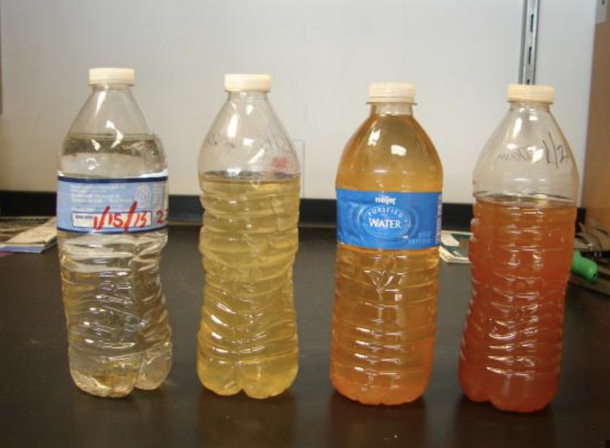

Flint water crisis
In 2014, residents of Flint, Michigan faced a health emergency when their water source was contaminated. Despite clear evidence of the problem, authorities hesitated to acknowledge it, exacerbating the crisis.
Resources
Article: Lead-Laced Water In Flint: A Step-By-Step Look At The Makings Of A Crisis
A day in history: The Flint water crisis begins